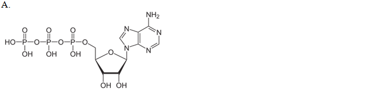
.

.


| a. A | ||
| b. B | ||
| c. C | ||
| d. D |
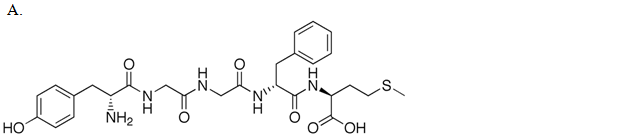

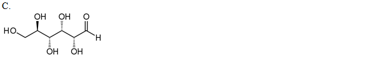

| A. A | ||
| B. B | ||
| C. C | ||
| D. D |
Below is the conversion of ubiquinone to ubiquinol. This reaction takes place in the inner
mitochondrial membrane, and ubiquinone and ubiquinol are two forms of coenzyme Q in the electron transport chain. Please analyze the following reaction
carefully, and choose the statement which describes it best.
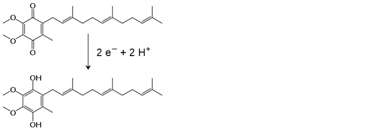
| A. This is an addition reaction, because electrons and protons are added to ubiquinone to form ubiquinol. | ||
| B. This is an addition reaction, because hydrogen atoms are added to ubiquinone to form ubiquinol. | ||
| C. This is a redox reaction, wherein ubiquinone is reduced to ubiquinol and ubiquinone is the oxidizing agent. | ||
| D. This is a redox reaction, wherein ubiquinone is reduced to ubiquinol and ubiquinone is the reducing agent. |
The overall chemical reaction of aerobic respiration is:
C6H12O6+ 6 O2® 6 CO2+ 6 H2O + Energy
Please analyze this reaction carefully, and choose the description which describes it best.
| A. This is a reduction, because oxygen is reduced to water. | ||
| B. This is an oxidation, because glucose is oxidized to carbon dioxide. | ||
| C. This is a redox reaction, wherein oxygen is the electron acceptor and carbon and hydrogen atoms are the electron donors. | ||
| D. This is oxidation, because oxygen atom can be found in at least one of the reactant molecules. |
The following diagram depicts the tetrahedral active site intermediate formation during serine protease catalyzed peptide
bond hydrolysis. Aspartate (Asp), histidine (His), and serine (Ser) are amino acids of the serine protease, which are close to each other and
can interact to catalyze the breakdown of certain peptide bonds in proteins. The protein is R'NHCOR in the diagram below. You can see hydrogen
bonds between the enzyme's Asp and His, and also the His is taking away a hydrogen from the Ser hydroxyl group. Which of the following
statements best describes the Ser attack on the peptide bond?

| A. Ser is a strong acid; this is why Ser gives His a proton. The result is a stable tetrahedral intermediate. | ||
| B. The hydrogen is a strong electrophile, and it attacks the peptide bond forming a negatively charged oxyanion. | ||
| C. The deprotonated Ser is a strong nucleophile, and it attacks the peptide bond forming a negatively charged oxyanion. | ||
| D. Ser is a strong base, and it attacks the peptide bond forming a negatively charged oxyanion. |
The following diagram depicts lactase catalyzed cleavage of lactose. Glu-1749 is the side chain of the active
site glutamate amino acid in the lactase enzyme. Lactose is a disaccharide; it is composed of a galactose and a glucose.
Downregulated lactase expression results in lactose intolerance. Please analyze the following diagram carefully, and choose the
statement which describes it best.
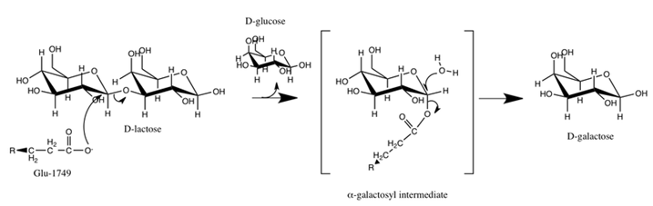
| A. Glucose leaves after the Glu-1749 electrophile attack on the glycosidic carbon of the galactose, and galactose is freed after water reacts with the hemiacetal carbon. | ||
| B. Glucose leaves after the Glu-1749 electrophile attack on the glycosidic carbon of the galactose, and galactose is freed after water reacts with the acetal carbon. | ||
| C. The acetal carbon of the galactose receives two nucleophile attacks: the first nucleophile is Glu-1749 and the second one is water. | ||
| D. The hemiacetal carbon of the galactose receives two nucleophile attacks: the first nucleophile is Glu-1749 and the second one is water. |
Fill in the blanks. Use the following structural formula to identify carbon 1 and 6. The oxidation state number of carbon atom 1 is ___, and the oxidation state number of carbon atom 6 is ____.

| A. +1, -1 | ||
| B. +4, +2 | ||
| C. +3, 0 | ||
| D. -2, -1 |

| A. +2 | ||
| B. -2 | ||
| C. +4 | ||
| D. -4 |
Fill in the blanks. A simplified outline of the catabolism of proteins, polysaccharides, and fats can be seen below. Nutrients are ______ when they are converted to acetyl-CoA. The citric acid cycle produces the ______ form of nicotinamide adenine dinucleotide, which is _________ by the electron transport chain.
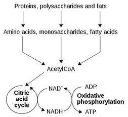
| A. Reduced, oxidized, reduced | ||
| B. Reduced, oxidized, oxidized | ||
| C. Oxidized, oxidized, reduced | ||
| D. Oxidized, reduced, oxidized |
Fill in the blank.The rearrangements that result in the common cyclic forms of D-glucose can be seen below. The cyclic form is a(n) ______.
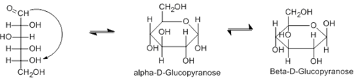
| A. Ether | ||
| B. Ester | ||
| C. Acetal | ||
| D. Hemiacetal |
Fill in the blank. Sucrose, the common table sugar, is a disaccharide, which is formed from glucose and fructose monosaccharides. The structural formula of sucrose is shown below. The glycosidic linkage between glucose and fructose makes sucrose a(n) ______.
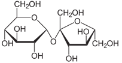
| A. Ether | ||
| B. Ester | ||
| C. Acetal | ||
| D. Hemiacetal |
Fill in the blank. Sucrose, the common table sugar, is a disaccharide, which is formed from glucose and fructose monosaccharides. The structural formula of sucrose is shown below. The formation of sucrose from glucose and fructose is a(n) _____ reaction.
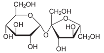
| A. Substitution | ||
| B. Elimination | ||
| C. Condensation | ||
| D. Redox |
Glyceraldehyde-3-phosphate (G3P) is an intermediate of glycolysis. The formula of G3P is shown below. G3P is converted to the next intermediate in a redox reaction catalyzed by a dehydrogenase enzyme. What is the product of this reaction?

A.
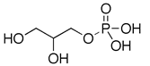
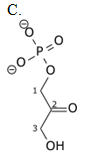

| A. A | ||
| B. B | ||
| C. C | ||
| D. D |
Fill in the blank. The diagram of protein synthesis can be seen below. The addition of new amino acids during protein synthesis is a(n) _____ reaction.
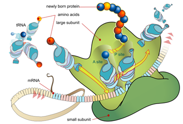
| A. Substitution | ||
| B. Elimination | ||
| C. Condensation | ||
| D. Redox |
At the initial step of β-oxidation, acyl-CoA (the general structural formula is shown below) is converted in an elimination reaction. What is the product of this reaction?
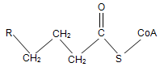


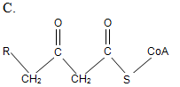

| A. A | ||
| B. B | ||
| C. C | ||
| D. D |
Fill in the blank. Glycolysis produces ATP via _____ .
| A. Substrate level phosphorylation | ||
| B. Redox reaction | ||
| C. Oxidation | ||
| D. Isomerization |
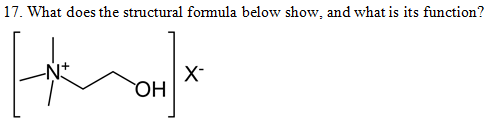
| A. A coenzyme. Coenzymes are organic cofactors that are essential for the biological activity of certain enzymes. | ||
| B. A monosaccharide. Monosaccharides are the building blocks of polysaccharides. | ||
| C. Choline. Choline is linked to the phosphate group in phospholipids. | ||
| D. An amino acid. Amino acids are the building blocks of proteins. |
18. What does the structural formula below show, and what is its function?

| A. A coenzyme. Coenzymes are organic cofactors that are essential for the biological activity of certain enzymes. | ||
| B. A monosaccharide. Monosaccharides are the building blocks of polysaccharides. | ||
| C. Choline. Choline is linked to the phosphate group in phospholipids. | ||
| D. An amino acid. Amino acids are the building blocks of proteins. |
What does the structural formula below show, and what is its function?
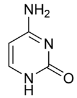
| A. N-acetylglucosamine. N-acetylglucosamine is a building block of bacterial cell wall. | ||
| B. A nucleotide. Nucleotides are the building blocks of nucleic acids. | ||
| C. An amino acid. Amino acids are the building blocks of proteins. | ||
| D. Uracyl. Uracyl is a building block of RNA. |
What does the structural formula below show, and what is its function?
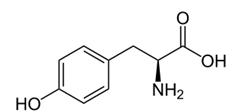
| A. N-acetylmuramic acid. N-acetylmuramic acid is the building block of bacterial cell wall. | ||
| B. A nucleotide. Nucleotides are the building blocks of nucleic acids. | ||
| C. An amino acid. Amino acids are the building blocks of proteins. | ||
| D. Tryptophan. Tryptophan is a building block of proteins. |
How many chiral carbon atoms can be found in the following organic molecule?

| A. 2 | ||
| B. 3 | ||
| C. 4 | ||
| D. 5 |
How many chiral carbon atoms can be found in the following organic molecule?

| A. 2 | ||
| B. 3 | ||
| C. 4 | ||
| D. 5 |
How many chiral carbon atoms can be found in the following organic molecule?
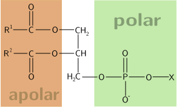
| A. 1 | ||
| B. 2 | ||
| C. 3 | ||
| D. None |
How many chiral carbon atoms can be found in the following organic molecule?
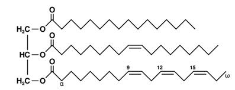
| A. 1 | ||
| B. 2 | ||
| C. 3 | ||
| D. None |
How many chiral carbon atoms can be found in the following organic molecule?

| A. 1 | ||
| B. 2 | ||
| C. 3 | ||
| D. 4 |
How many chiral carbon atoms can be found in the following organic molecule?
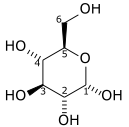
| A. 1 | ||
| B. 3 | ||
| C. 5 | ||
| D. 6 |
Fill in the blank. Triglycerides ______ chiral carbon atoms.
| A. Always have 1 | ||
| B. Always have 2 | ||
| C. Always have 3 | ||
| D. Do not always have |
The following diagram depicts energy level changes during chemical reactions. One of the lines represents a
reaction without a catalyst. What can be the relationship of the two energy profiles on the diagram?
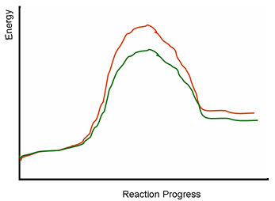
| A. The reaction without a catalyst must be the red line. The green line cannot be the same reaction catalyzed by an enzyme, because the energy levels of the green and red products are different. | ||
| B. The red line is the enzyme catalyzed reaction, because enzymes speed up reactions and produce higher energy level products. The green line is the reaction without a catalyst. | ||
| C. The red and green lines represent two different reactions; it is unclear if any of these reactions are enzyme catalyzed or not. | ||
| D. Both the red and green lines represent enzyme catalyzed reactions; the green and red energy peaks represent the breaking of the chemical bonds in the substrates. |
The following diagram depicts energy level changes during chemical reactions. One of the lines represents a
reaction without a catalyst. Could the other line be the energy profile of an enzyme catalyzed reaction?

| A. The red and green lines represent two different reactions; it is unclear if any of these reactions are enzyme catalyzed or not. | ||
| B. Both the red and green lines represent enzyme catalyzed reactions; the green and red energy peaks represent the breaking of the chemical bonds in the substrates. | ||
| C. The green and the red lines may represent the same reaction; the red is without a catalyst, and the green is enzyme catalyzed. | ||
| D. The green and the red line represent different reactions, because the green and red activation energies are different. |
The following diagram depicts energy level changes during chemical reactions. Which line represents an endergonic, and which one represents an exergonic reaction?

| A. The green line represents an endergonic reaction; the red line represents an exergonic reaction. | ||
| B. The red line represents an endergonic reaction; the green line represents an exergonic reaction. | ||
| C. Both the green and the red lines represent endergonic reactions. | ||
| D. Both the green and the red lines represent exergonic reactions. |
You are a scientist and you want to set up a protein phosphorylation reaction using PKA. You purchased PKA from a biotech company, and the datasheet tells you that PKA requires ATP, cAMP and Mg2+. What could be the role of these reaction mixture ingredients?
| A. ATP and cAMP are coenzymes; Mg2+is a cofactor. | ||
| B. ATP is a substrate; cAMP and Mg2+ are cofactors. | ||
| C. ATP, cAMP, and Mg2+ are cofactors. | ||
| D. ATP is a substrate; cAMP is a coenzyme, and Mg2+ is a cofactor. |
You are a scientist and you would like to set up a carbon fixation reaction in the test tube. You would like to make glyceraldehyde-3-phosphate [G3P] from carbon dioxide; you would like to mirror the Calvin-Benson cycle. What should you consider, when you design your experiment?
| A. This will be an exergonic reaction, which will produce ATP and other possible high-energy molecules as well. | ||
| B. This will be an exergonic reaction; thus, cooling will be necessary if you would like to avoid the high-energy G3P-driven explosion. | ||
| C. This will be an endergonic reaction; thus, you will need an enzyme to catalyze it. | ||
| D. This will be an endergonic reaction; thus, you will need high energy compounds that can provide the energy, which will be stored in G3P. |
Fill in the blank. Bile acids emulsify_____ and expose them for _______ in the small intestine.
| A. Cholesterol, the pancreatic hydrolase | ||
| B. Chylomicrons, apolipoprotein B-100 | ||
| C. LDL, LDL receptor | ||
| D. Triglycerides, the pancreatic lipase |
Fill in the blank. Bile acid can emulsify fats, because it is _____.
| A. Hydrophilic | ||
| B. Amphipathic | ||
| C. Lipophilic | ||
| D. Hydrophobic |
Fill in the blank. Triglycerides combine with bile to form _____________ and enter the central lacteal of the villi.
| A. Low density lipoproteins | ||
| B. High density lipoproteins | ||
| C. Chylomicrons | ||
| D. Very low density lipoproteins |
β-oxidation breaks down fatty acids to acetyl-CoA, but odd-numbered fatty acids cannot be fully converted into acetyl-CoA. How are odd-numbered fatty acids metabolized?
| A. Odd-numbered fatty acids contribute to the regulation of the Szent-Györgyi-Krebs cycle's intermediates through giving rise to succinyl-CoA. | ||
| B. Odd-numbered fatty acids do not occur naturally, and there is no metabolic pathway to break them down fully. If industrially produced odd-numbered fatty acids are consumed, then the last three carbon atoms will be excreted as a waste in the form of propionic acid. | ||
| C. Eukaryotic cells cannot break down the last three carbon atoms containing propionyl-CoA, but bacteria in the gastrointestinal tract can. Bacteria will produce methane gas from propionyl-CoA, and this will result in gastrointestinal discomfort. | ||
| D. β-oxidation breaks down fatty acids to acetyl-CoA and propionyl-CoA. Both acetyl-CoA and propionyl-CoA can step into the Szent-Györgyi-Krebs cycle, and they can be used to generate NADH and FADH2 for the electron transport chain. |
What is the contribution of fatty acids metabolism to the production of metabolites for biosynthesis and to energy production?
| A. Metabolites for biosynthesis are produced by fatty acid catabolism; only anabolism makes energy. | ||
| B. Metabolites for biosynthesis are produced by fatty acid anabolism; only catabolism makes energy. | ||
| C. Metabolites for biosynthesis are produced by fatty acid catabolism and anabolism; only catabolism makes energy. | ||
| D. Metabolites for biosynthesis are produced by fatty acid catabolism; both anabolism and catabolism make energy. |
Fill in the blank. The synthesis of__________ is the first step of fatty acid synthesis; this metabolite inhibits carnitine palmitoyltransferase, which controls fatty acid oxidation.
| A. Malonyl-CoA | ||
| B. Acetyl-CoA | ||
| C. Citric acid | ||
| D. Succinyl-CoA |
| A. Carbon dioxide is, NADH and FADH2 | ||
| B. Acetyl-CoA is, oxaloacetic acid | ||
| C. Acetyl-CoA is, citric acid | ||
| D. Acetyl-CoA and glycerol are, ATP |
Fill in the blank. Both fatty acid synthesis and catabolism takes place through a series of ___________ reactions.
| A. Elimination | ||
| B. Dehydration synthesis | ||
| C. Substitution | ||
| D. Redox |
Medium chain acyl-CoA dehydrogenase (MCAD) deficiency affects 1 in 17000 people in the United States. Why should MCAD deficient people avoid prolonged fasting?
| A. High glucagon level during fasting activates fatty acid oxidation, which cannot be completed due to MCAD deficiency. Fatty acids will be increasingly retained in the adipose tissue, and this will result in obesity. | ||
| B. High glucagon levels during fasting activate fatty acid oxidation, which in turn inhibits glucose oxidation. If glucose oxidation cannot be inhibited as the result of MCAD deficiency, then the brain will not get sufficient glucose. | ||
| C. This is a common misconception. MCAD deficient people are simple lucky, because they can eat fatty food. Most of the consumed fat is excreted in the form of medium chain fatty acids, and their adipose tissue cannot accumulate in excess. | ||
| D. MCAD deficient people do not have efficient fatty acid catabolism in their brain, because most of the fat energy is lost during the excretion of medium chain fatty acids. |
Fill in the blanks. The transcription factor, __________, regulates both the synthesis and the cellular uptake of cholesterol. Thus, this transcription factor is directly involved in _________.
| A. SCREBP, artherosclerotic plaque formation | ||
| B. SCREBP, development of high blood pressure | ||
| C. Sterol, risk level of cardiac arrest | ||
| D. Sterol, cardiovascular disease |
The simplified diagram of the sterol biosynthesis is shown below. What is the name of the growing red-blue structure in this pathway?
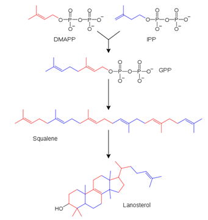
| A. Mevalonate | ||
| B. Lanosterol | ||
| C. HMG-CoA | ||
| D. Isoprene |
Which of the following is a five-carbon organic compound and is a precursor of terpenoid biosynthesis?
| A. Mevalonate | ||
| B. Lanosterol | ||
| C. HMG-CoA | ||
| D. Isoprene |
Which of the following reactions produces mevalonate?

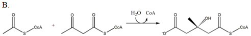


| A. A | ||
| B. B | ||
| C. C | ||
| D. D |
The chemical structure of a free fatty acid is shown below. How would you characterize this fatty acid?
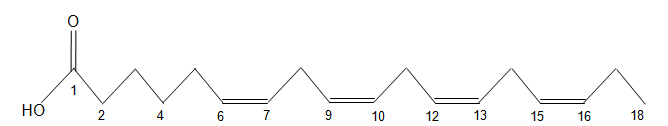
| A. 18:4 ω-3 | ||
| B. 18:3 ω-4 | ||
| C. 18:3 ω-6 | ||
| D. 18:4 ω-6 |
The chemical structure of a free fatty acid is shown below. How would you characterize this fatty acid?

| A. 18:9 ω-2 | ||
| B. 18:6 ω-9 | ||
| C. 18:2 ω-6 | ||
| D. 18:2 ω-6 |
You can see the space-filling models of two fatty acids below (1 and 2). Which fatty acid is essential, and which one is non-essential for humans?

| A. 1 | ||
| B. 2 | ||
| C. Both | ||
| D. None |
Fill in the blank. Linoleic acid and linolenic acid cannot be synthesized in human tissues, because ____________.
| A. Human cells can synthesize only mono-unsaturated fatty acids. | ||
| B. Humans are diploid organisms; only polyploid organisms have enough genes for the biosynthesis of theses fatty acids. | ||
| C. The corresponding biosynthetic pathway was lost during evolution. | ||
| D. Human cells cannot synthesize unsaturated fatty acids. |
The following diagram shows the catabolism of the three main nutrient groups, including carbohydrates. Which arrow represents a pathway that is utilized in every cell?
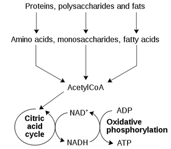
| A. Monosaccharide -> Acetyl-CoA | ||
| B. Citric acid cycle | ||
| C. Oxidative phosphorylation | ||
| D. Polysaccharide -> monosaccharide |
Why can termites digest cellulose?
| A. Their digestive tract secretes β-glucosidase. | ||
| B. Bacteria in their digestive tract secrete β-glucosidase. | ||
| C. Their digestive tract secretes α-glucosidase. | ||
| D. Bacteria in their digestive tract secrete α-glucosidase. |
Which of the following structural formula show an α, and which one shows a β anomer?
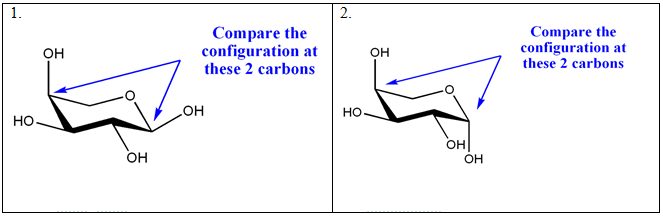
1.
2.
| A. 1 is an α anomer, and 2 is a β anomer. | ||
| B. 2 is an α anomer, and 1 is a β anomer. | ||
| C. Both are α anomers. | ||
| D. Both are β anomers. |
Which enzyme is a key regulator of glycolysis?
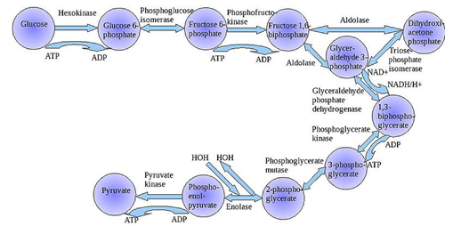
| A. Hexokinase | ||
| B. Glucose 6-phosphate | ||
| C. Phosphofructokinase | ||
| D. Pyruvate kinase |
Fill in the blank. ATP is required for the activity of phosphofructokinase, but high ATP level inhibits its activity. This is because ATP _____________.
| A. Is both a substrate and an allosteric inhibitor of phosphofructokinase | ||
| B. Is both an allosteric activator and an allosteric inhibitor of phosphofructokinase | ||
| C. Is used only when there is plenty in the cell | ||
| D. Level decreases immediately in the presence of phosphofructokinase |
Fill in the blank. Both ATP and citric acid are allosteric inhibitors of the phosphofructokinase enzyme. High levels of these compounds indicate that ________________.
| A. The cellular respiration is not going on efficiently, but the ATP level is sufficient | ||
| B. The cellular respiration is efficiently going on, and it is producing sufficient ATP | ||
| C. Phosphofructokinase expression is inhibited by ATP and citric acid | ||
| D. Phosphofructokinase is a subject of negative feedback inhibition as the first enzyme of the glycolytic pathway |
Fill in the blank. Fermentation recycles ______, thus glycolysis can produce more ATP.
| A. FADH2 | ||
| B. NADP+ | ||
| C. NAD+ | ||
| D. AMP |
What is the final electron acceptor during fermentation?
| A. A coenzyme | ||
| B. NADH | ||
| C. ATP | ||
| D. An organic molecule |
58. Fill in the blanks. Louis Pasteur, a French chemist, was the first to determine that the presence of some microorganism results in ____fermentation, while other microorganisms produce _____.
| A. Alcoholic, acid | ||
| B. Acidic, carbon dioxide | ||
| C. Alcoholic, carbon dioxide | ||
| D. Ethanol, lactic acid |
The following diagram shows an outline of cellular respiration. Why is the Citric Acid Cycle called a "cycle,"
but the glycolysis and the electron transport chain is not?

| A. The two carbon atoms of the CoA linked acetyl group are catabolized in two consecutive steps. | ||
| B. The citric acid cycle requires the presence of a starter molecule (oxaloacetate) for the catabolism of the CoA linked acetyl group, and this starter molecule is recycled after the catabolism of the acetyl group. | ||
| C. It is a historical nomenclature; there is no particular reason to call a pathway "cycle." | ||
| D. It takes two rounds for the citric acid cycle to release the remaining carbon atoms of one glucose molecule in the form of carbon dioxide. |
Fill in the blanks. The cyclic and the linear light reactions produce ATP, but only the ______ light reaction makes _______.
| A. Cyclic, NADH | ||
| B. Cyclic, NADPH | ||
| C. Linear, NADPH | ||
| D. Linear, NADH |
The following diagram shows an outline of the Calvin-Benson Cycle. Why is this pathway called a
"cycle?"

| A. Glyceraldehyde 3-phosphate, the three carbon containing sugar, is built by three consecutive steps. | ||
| B. The Calvin-Benson cycle requires the presence of a starter molecule (ribulose 1,5-bisphosphate) for the carbon fixation, and this starter molecule is recycled after the synthesis of the three carbon sugar. | ||
| C. It is a historical nomenclature; there is no particular reason to call a pathway "cycle." | ||
| D. Because it takes three rounds for the Calvin-Benson cycle to synthesize one triose molecule from carbon dioxide. |
Fill in the blank. A eukaryotic cell that has insufficient amount of oxaloacetate _____.
| A. Will complete the cellular respiration of glucose to carbon dioxide, because the involved pathways do not produce net oxaloacetate. | ||
| B. Will not be able to survive, because it cannot complete cellular respiration. | ||
| C. Will produce two ATP molecules per glucose, and it will recycle NAD+ with fermentation. | ||
| D. Will have increased carbon dioxide binding, thus it will be able to perform carbon fixation more efficiently. |
Fill in the blank. A eukaryotic cell that lacks ribulose 1,5-bisphosphate is a(n) _________.
| A. Chemoautotroph | ||
| B. Photoheterotroph | ||
| C. Autotroph | ||
| D. Heterotroph |
Fill in the blank. A eukaryotic cell which harvests light energy with only the cyclic light reaction _____________.
| A. Will need a light reaction independent NADPH source to perform carbon fixation | ||
| B. Can fully support carbon fixation with the cyclic light reaction | ||
| C. Will employ an NADPH independent way of carbon fixation | ||
| D. Will become heterotroph |
Glycolysis and the pentose phosphate pathway are alternatives, but the pentose phosphate pathway is less efficient in ATP production. Is there a special need for the pentose phosphate pathway in the cell?
| A. Glycolysis and the pentose phosphate pathway are completely interchangeable. | ||
| B. The pentose phosphate pathway produces metabolites for the synthesis of essential amino acids. | ||
| C. The pentose phosphate pathway is used, when the cell has high ATP levels, and it is not very important to extract as much energy as possible from one glucose molecule. | ||
| D. The pentose phosphate pathway produces essential metabolites for nucleotide synthesis and NADPH. |
What is similar in the Szent-Györgyi-Krebs and the Calvin-Benson cycles?
| A. Both the Calvin-Benson and the Szent-Györgyi-Krebs cycles have key metabolites that are necessary to start the cycle: oxaloacetic acid for the Szent-Györgyi-Krebs cycle, and ribulose 1,5-bisphosphate for the Calvin-Benson cycle. | ||
| B. Both the Calvin-Benson and the Szent-Györgyi-Krebs cycles make ATP and other high energy molecules. | ||
| C. Both metabolic cycles result in the production of carbon dioxide. | ||
| D. The primary role of both pathways is the production of NADH and FADH2 for the electron transport chain. |
| A. The Szent-Györgyi-Krebs cycle breaks down a triose to carbon dioxide; the Calvin-Benson cycle synthesizes a triose from carbon dioxide. | ||
| B. The Calvin-Benson cycle requires NADH, while the Szent-Györgyi-Krebs makes NADH. | ||
| C. The Szent-Györgyi-Krebs cycle breaks down an organic molecule to carbon dioxide; the Calvin-Benson cycle synthesizes an organic molecule from carbon dioxide. | ||
| D. The Szent-Györgyi-Krebs cycle requires high energy molecules for carbon dioxide production; the Calvin-Benson cycle produces high energy molecules as a byproduct of triose synthesis. |
Why are BRCAs not synthesized in human tissues?
| A. Human cells can synthesize only polar amino acids. | ||
| B. Humans are diploid organisms; only polyploid organisms have enough genes for the biosynthesis of BRCAs. | ||
| C. The corresponding biosynthetic pathway was lost during evolution. | ||
| D. Human cells cannot synthesize apolar amino acids. |
Fill in the blank. Essential amino acids are those that cannot be produced by an organism, e.g. _____ has no essential amino acid, but all amino acids are essential for _______.
| A. Escherichia coli, algae | ||
| B. Escherichia coli, Lactobacteria | ||
| C. Plants, humans | ||
| D. Lactobacteria, humans. |
Fill in the blanks. Metabolic diseases may render an otherwise nonessential amino acid to become essential. For example, the inherited metabolic disease _______, moves _______ to the essential amino acid category in affected individuals.
| A. Phenylketonuria, phenylalanine | ||
| B. Maple syrup urine disease, branched chained amino acids | ||
| C. Alkaptonuria, tyrosine | ||
| D. Phenylketonuria, tyrosine |
How many amino acids are essential?
| A. For some species all amino acids are essential, for others none are essential. | ||
| B. There are nine essential amino acids. | ||
| C. Plants and fungi have none; for every other species, 9 amino acids are essential. | ||
| D. There are 10 essential amino acids. |
Complete the sentence. Ornithine is essential in the urea cycle, because ______________.
| A. It is converted to arginine, and arginine is used in protein synthesis | ||
| B. The urea cycle requires the presence of ornithine as a starter molecule, and it is being recycled as the nitrogen leaves the cycle in the form of urea | ||
| C. Ornithine delivers the nitrogen from amino acid catalysis into the cycle | ||
| D. Ornithine is cycling between the cytosol and the mitochondria during the cycle |
What is a common way of regulating amino acid synthesis?
| A. Many amino acids are allosteric inhibitors of an early step of their own anabolic pathway. | ||
| B. Many amino acids are competitive inhibitors of their own anabolic pathway. | ||
| C. Many amino acids are allosteric activators of an early step of their own anabolic pathway. | ||
| D. Most amino acids originate from the breakdown of proteins; the amino acid anabolic pathways are hardly used and are not regulated anymore. |
Which compound reacts with carbamoyl phosphate in the urea cycle?
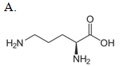
.
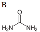
.

.
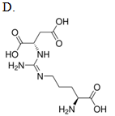
| A. A | ||
| B. B | ||
| C. C | ||
| D. D |
What is the biological function of the following pathway?
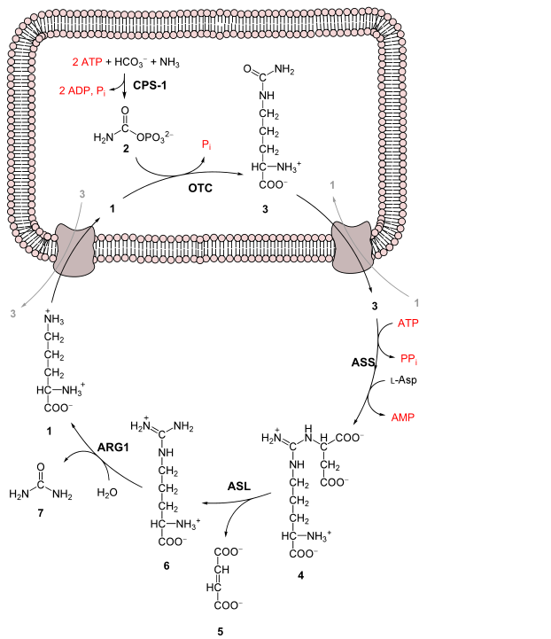
| A. The biological role of this cycle is to fix nitrogen. | ||
| B. The biological role of this cycle is to synthesize arginine. | ||
| C. The biological role of this cycle is to eliminate nitrogen. | ||
| D. The biological role of this cycle is to synthesize ornithine. |
What regulates the committed step of the urea cycle?
| A. The excess of glutamate | ||
| B. Low levels of urea | ||
| C. High levels of ornithine | ||
| D. The absence of citrulline |
Which statement best describes the metabolism of amino acids?
| A. Glutamate is involved in both amino acid synthesis and amino acid breakdown. | ||
| B. Glutamate is involved only in the deamination of other amino acids. | ||
| C. The amino acid catabolism and the amino acid synthesis pathways do not overlap. | ||
| D. Pyridoxal phosphate is a coenzyme for transamination reactions. |
Which of the following best describes a transaminases catalyzed reaction?
| A. It is an elimination reaction, because it results in the removal of the amino group from the amino acid. | ||
| B. It is a substitution reaction, because the amino group is exchanged to ketone group. | ||
| C. It is an oxidation, because the α-carbon is oxidized in the product. | ||
| D. It is a redox reaction, because the α-carbon is oxidized in the product. |
Which enzymes are used during both the biosynthesis and the catabolism of amino acid?
| A. Transaminases | ||
| B. Transcarbamilases | ||
| C. Phosphoenolpyrivate kinase and phosphatase | ||
| D. Dighydroxiacid dehydratases |
| A. It can be stored in fats. | ||
| B. It can be stored in glucose. | ||
| C. It can be stored in fats and glucose. | ||
| D. It always released as carbon dioxide. |
Which metabolic pathway has the intermediate which is used to start the biosynthesis of all branch chain amino acids?
| A. Glycolysis | ||
| B. Calvin-Benson cycle | ||
| C. Szent-Györgyi-Krebs cycle | ||
| D. Alanine cycle |
Fill in the blank. If the urea cycle does not work efficiently, the blood ____ levels will increase.
| A. Amino acid | ||
| B. Ammonia | ||
| C. Glutamine | ||
| D. Glutamate |
Fill in the blank. High ammonia levels _______.
| A. Result from the breakdown of urea in the urea cycle. | ||
| B. Result in unnecessary amino acid production, and excessive protein synthesis. | ||
| C. Decrease glutamate levels, thus it interferes with neuronal signal transduction. | ||
| D. Result from the breakdown of carbamoyl phosphate at the end of the urea cycle. |
Which metabolic pathway has the intermediate which is used to start the biosynthesis of all aromatic amino acids?
| A. Glycolysis | ||
| B. Calvin-Benson cycle | ||
| C. Szent-Györgyi-Krebs cycle | ||
| D. Alanine cycle |
Which metabolic pathway has the intermediate which is used to start the biosynthesis of threonine and glutamate?
| A. Glycolysis | ||
| B. Calvin-Benson cycle | ||
| C. Szent-Györgyi-Krebs cycle | ||
| D. Alanine cycle |
Which metabolic pathway has the intermediate which is used to start the biosynthesis of histidine?
| A. Pentose phosphate pathway | ||
| B. Calvin-Benson cycle | ||
| C. Szent-Györgyi-Krebs cycle | ||
| D. Alanine cycle |
What is the heterocyclic intermediate of the purine nucleotide interconversion?
| A. AMP | ||
| B. IMP | ||
| C. GMP | ||
| D. Uric acid |
Which nucleotides are used as energy source by the cell?
| A. ATP is the only nucleotide that is used as the source of energy in anabolic reactions. | ||
| B. ATP is the most commonly used, but GTP, CTP, and UTP are used as well. | ||
| C. GTP is used during protein synthesis, but every other anabolic pathway utilizes ATP. | ||
| D. ATP is the energy source in anabolic reactions, but catabolic reactions use GTP, CTP, and UTP. |
Which metabolite is involved in both the salvage of adenine and the biosynthesis of adenosine-5'-monophosphate?
| A. inosine-5'-monophosphate | ||
| B. Hypoxanthine | ||
| C. Ribose-5-phosphate | ||
| D. 5-phosphoribosyl-1-ribophosphate |
The relative activity of kinases determines the nucleotide levels in the cell. Which nucleotides have the highest levels?
| A. The NMP levels are highest, because the cell invests in NDP and NTP synthesis only as needed. | ||
| B. The NMP levels are highest, because the nucleoside kinases are the most active. | ||
| C. The NTP levels are highest, because the NDP kinases are the most active. | ||
| D. The NDP levels are highest, because the NMP kinases are the most active. |
Fill in the blanks. ___________ is synthesized from glutamine for pyrimidine biosynthesis, but for amino acid catabolism, it is derived from ____________ bicarbonate.
| A. α-ketoglutarate, carbamate or | ||
| B. α-ketoglutarate, ammonia and | ||
| C. Carbamoyl phosphate, carbamate or | ||
| D. Carbamoyl phosphate, ammonia and |
Fill in the blanks. The __________cycle catabolizes AMP to ___________.
| A. Calvin-Benson, glyceraldehyde-3-phosphate | ||
| B. Purine nucleotide, fumarate | ||
| C. Szent-Györgyi-Krebs, fumarate | ||
| D. Citric acid, oxaloacetic acid |
| a. dATP accumulation and the general inhibition of dNTP synthesis from NTPs | ||
| b. dATP accumulation and the general inhibition of RNA synthesis | ||
| c. AMP accumulation and the selective inhibition of GMP synthesis | ||
| d. AMP accumulation and the selective inhibition of IMP synthesis |
| a. Aspartate | ||
| b. 10-formyl tetrahydrofolate | ||
| c. Glycine | ||
| d. 5-Phosphoribosil-1-phosphate |
Fill in the blanks. Glutamine, aspartate, and _________ are building blocks of __________ base synthesis.
| a. 10-formyl tetrahydrofolate, purine and pyrimidine | ||
| b. 10-formyl tetrahydrofolate, purine | ||
| c. Glycine, pyrimidine | ||
| d. 5-Phosphoribosil-1-phosphate, purine and pyrimidine |
The end product of purine base metabolism is uric acid, and its accumulation may lead to gout formation. Which drug may be used to lower uric acid levels?
| a. PRPP, which inhibits de novo IMP synthesis | ||
| b. Hypoxanthine, which inhibits xanthine oxidase | ||
| c. Allopurinol, which is an isomer of hypoxanthine | ||
| d. Oxypurinol, which is an isomer of hypoxanthine |
| a. Adenosine-5'-triphosphate | ||
| b. 5-Phosphoribosil-1-phosphate | ||
| c. 5-Phosphoribosil-1-pyrophosphate | ||
| d. Guanosine-5'-triphosphate |
| a. Ribonucleotides, deoxyribonucleotides | ||
| b. Deoxyribonucleotides, ribonucleotides | ||
| c. Inosine-5'-monophosphate, guanine-5'-monophosphate | ||
| d. Uric acid, adenosine-5'-monophosphate |
| a. Is the precursor of tetrahydrofolate | ||
| b. Interferes with dTMP synthesis | ||
| c. Interferes with dUMP synthesis | ||
| d. Activates glycine synthesis |
| a. The active site of the enzyme is a complement only to the ribose part of the nucleotide, and its activity is allosterically regulated by the dGTP: GTP ratio. | ||
| b. ATP is an activator and dATP is an inhibitor of this enzyme, and all four dNTPs are produced simultaneously. | ||
| c. Each ribonucleotide reductase enzyme is specific to one NTP substrate, and its activity is negatively regulated by high levels of the corresponding dNTP. | ||
| d. ATP is an activator and dATP is an inhibitor of this enzyme. Furthermore, all four dNTPs adjust the specificity of this broad spectrum enzyme. |